A visual tour of dsm — from your first launch to installing, searching, and removing .NET SDKs. Every step has a real screenshot of the terminal UI.
Each row in dsm is tagged with one of these icons so you can judge a version at a glance.
Open a terminal and run:
dsm
You're greeted with an animated block-letter banner with a teal-to-lime shine sweep. To skip it, run dsm --no-splash.
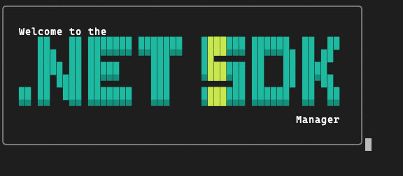
Once it loads, you land on the main screen. The SDKs panel is on top, Runtimes below, and a compact Setup panel (showing your dotnetup version) sits in the top-right. The footer always lists the keys available for the focused panel.
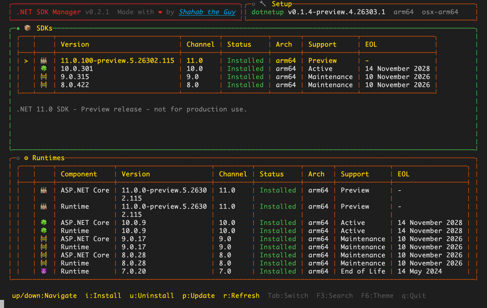
dsm uses dotnetup — the official .NET acquisition tool — to do the actual installing and removing. On a fresh machine the Setup panel will show dotnetup not found.
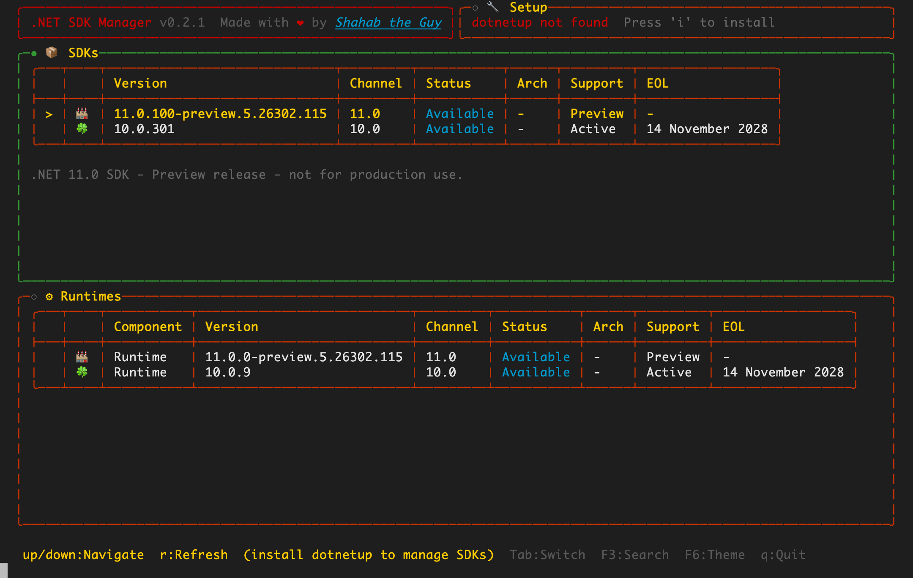
Press Tab until the Setup panel is focused (its title dot turns green), then press i to install dotnetup.
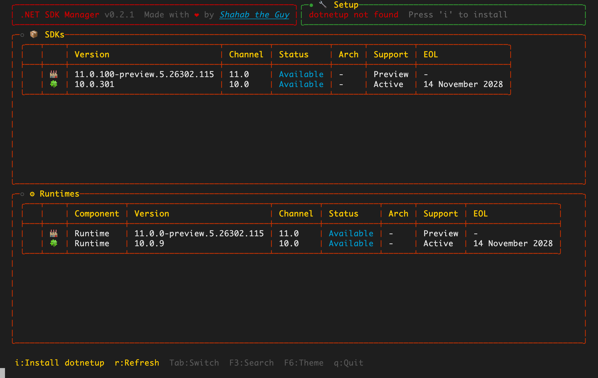
dsm briefly drops out of the UI to run the install command in your real terminal so you can see the live output, then returns and refreshes automatically. When it's done, the Setup panel shows your installed dotnetup version, architecture, and RID.
With dotnetup in place, the SDKs panel shows the latest version of each active and preview channel. Anything not yet on your machine is marked Available.
Focus the SDKs panel with Tab, move to the version you want with ↑ ↓, and press i to install it. dsm streams the real download and install progress:
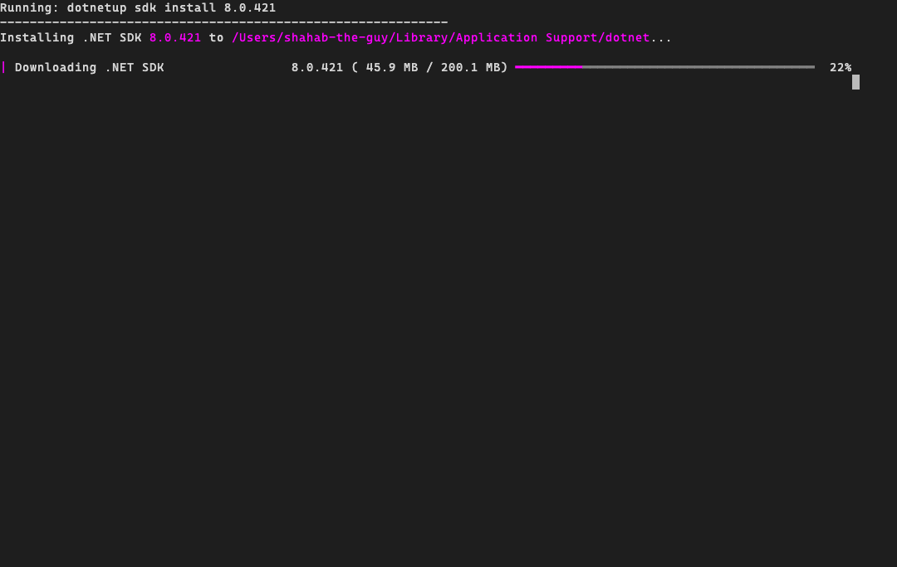
dotnetup command and a real progress bar.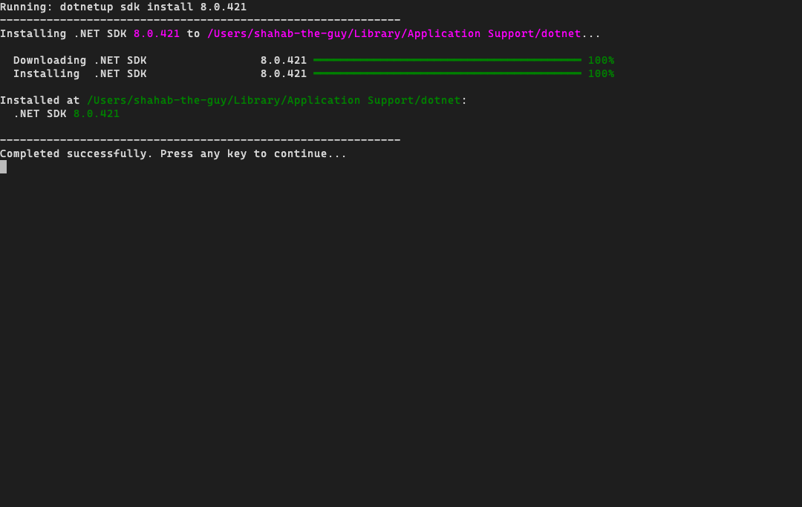
The main screen only shows the latest of each channel. To find a specific older patch, open search with F3.
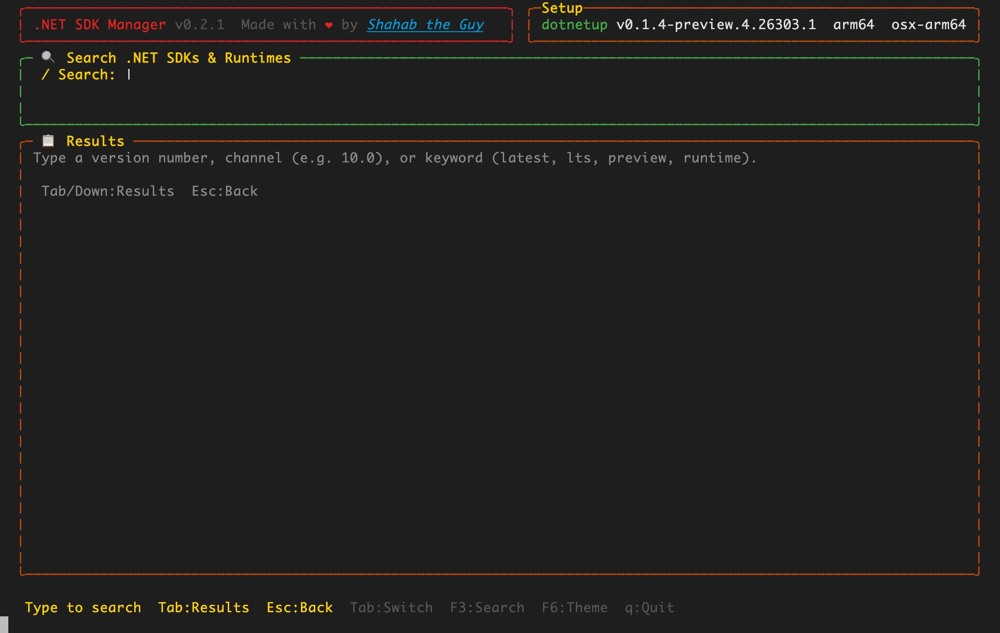
Type a channel (e.g. 8.0), a full version, or a keyword like preview, lts, or latest. Results update live as you type, with debounce — the UI never freezes.
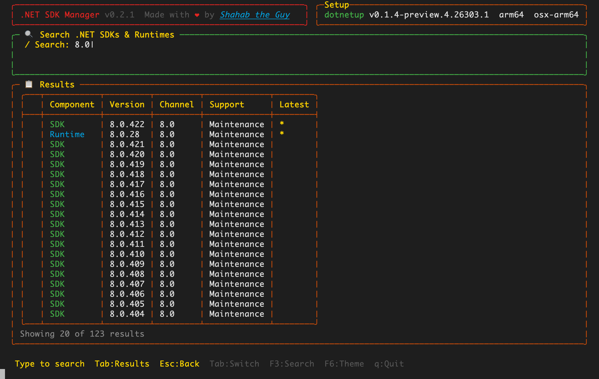
8.0 lists every available 8.0 SDK and runtime — newest first, with a ★ marking the latest.Inside the results list, highlight the exact version you want and press i.
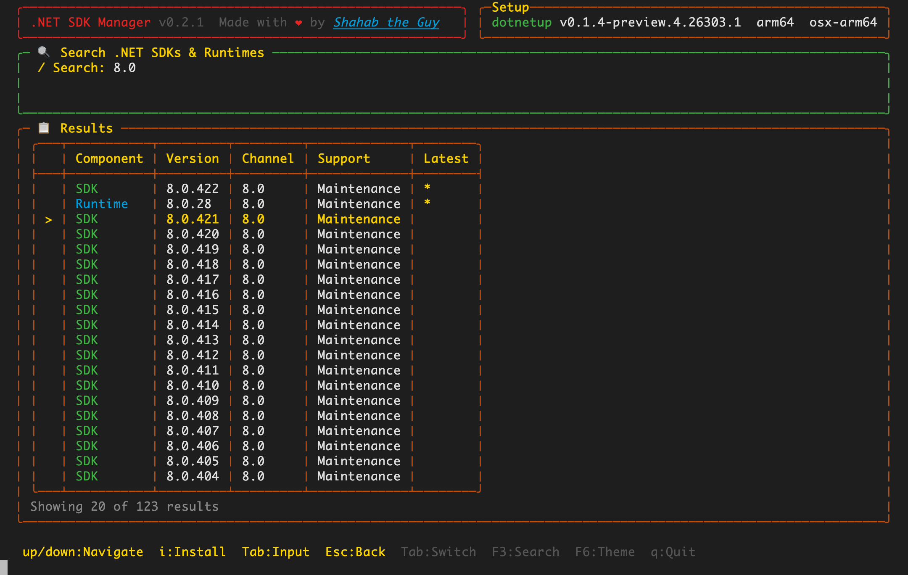
8.0.421 is selected — pressing i installs that exact version.Just like installing from the main panel, dsm runs dotnetup sdk install <version> and streams the progress. When it finishes, the version shows up as Installed back on the main screen.
Search installs the exact version you pick, so you can keep multiple patch levels of the same channel side by side.
Back on the main screen, focus the SDKs panel, highlight an installed version, and press u.
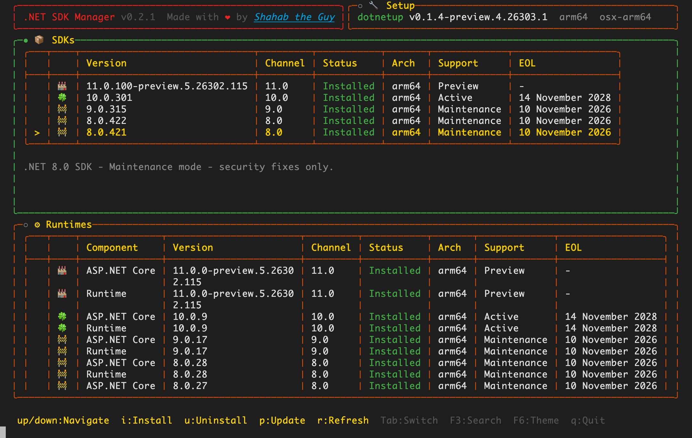
8.0.421 selected for removal — the description line below the table explains the channel's support status.dsm figures out the right dotnetup install spec automatically — feature bands, channels, or latest — so removal just works, then streams the output:
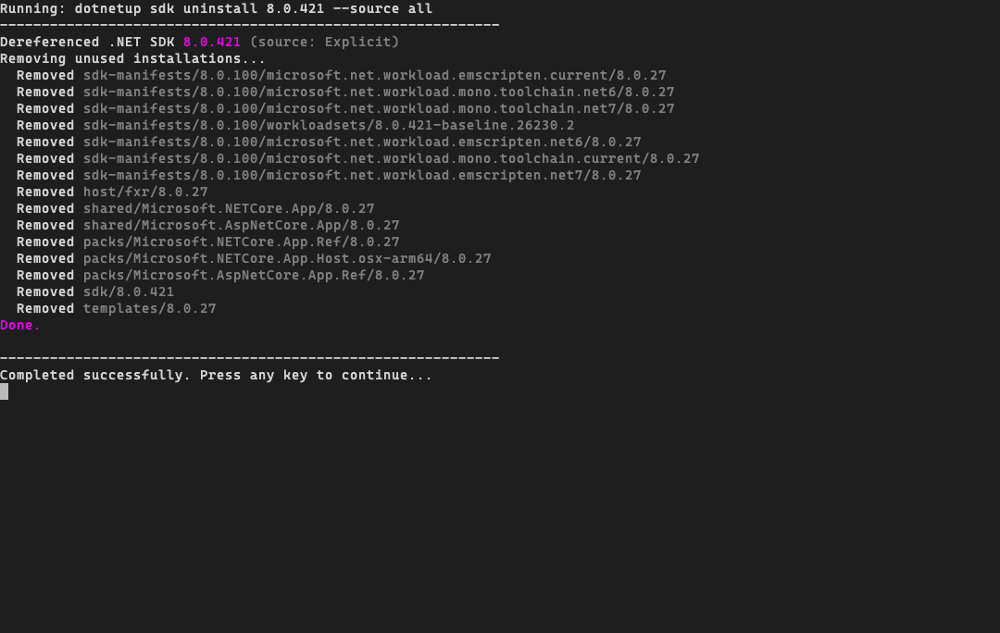
Uninstalling only removes the selected version. Other patch levels and the runtimes used by your remaining SDKs are left untouched.